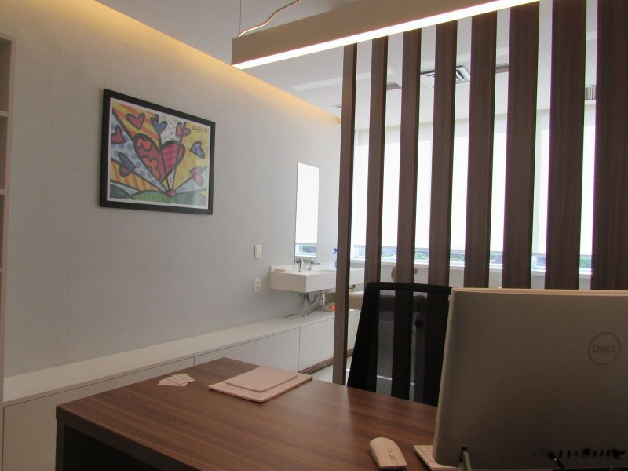
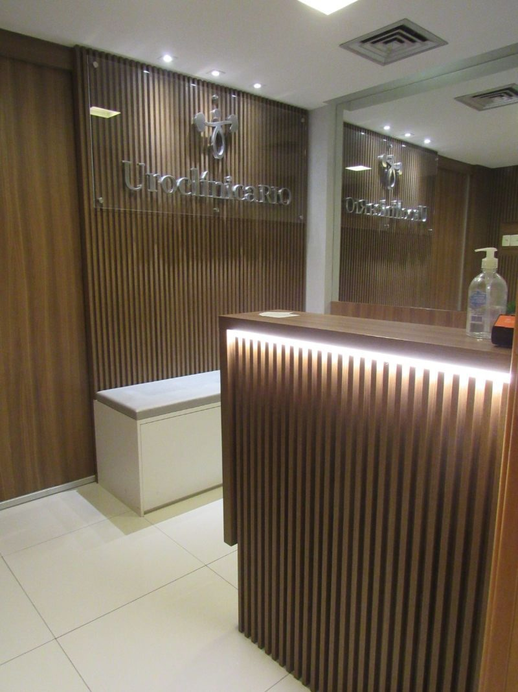

Cirurgia robótica, uro-oncologia e consultas de urologia com atendimento humanizado, na Rua Cardoso de Morais — para toda a Zona Norte e a Ilha do Governador.
A UroClínica Rio em Bonsucesso leva à Zona Norte o mesmo corpo clínico, a mesma tecnologia e o mesmo acolhimento da unidade da Barra. É a escolha de quem procura um urologista de confiança em Bonsucesso, Ramos, Olaria, Penha, Higienópolis, Maria da Graça e na Ilha do Governador.
Da consulta de rotina e da prevenção da próstata ao tratamento cirúrgico avançado com cirurgia robótica minimamente invasiva, você encontra cuidado urológico completo perto de casa — com boa conexão pela Linha Vermelha e pela Avenida Brasil, além da opção de teleconsulta por vídeo.

Unidade BonsucessoCuidado urológico completo na Zona Norte do Rio, da prevenção ao tratamento cirúrgico de alta complexidade.

Recepção · BonsucessoRua Cardoso de Morais, 201, sala 503 — Bonsucesso, Rio de Janeiro/RJ, CEP 21032-900.
Atendimento: segunda a sexta, das 8h às 17h.
Agendamento: WhatsApp (21) 97621-9403.
Na Rua Cardoso de Morais, 201, sala 503 — Bonsucesso, Rio de Janeiro/RJ, CEP 21032-900. Atende com facilidade toda a Zona Norte e a Ilha do Governador, com boa conexão pela Linha Vermelha e pela Avenida Brasil.
Sim. O mesmo corpo clínico da Barra atende em Bonsucesso, com cirurgia robótica urológica, uro-oncologia, andrologia, videolaparoscopia e urologia reconstrutora.
De segunda a sexta, das 8h às 17h. O agendamento é feito pelo WhatsApp (21) 97621-9403.
Sim. A unidade de Bonsucesso é uma opção prática para quem mora na Ilha do Governador, em Ramos, Olaria, Penha, Higienópolis e demais bairros da Zona Norte do Rio.
Fale com a nossa equipe e agende sua consulta presencial em Bonsucesso ou por teleconsulta.